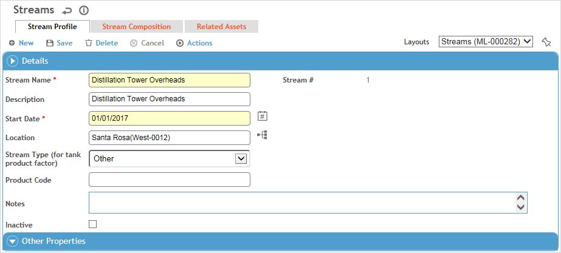

The Streams module allows you to group chemicals into process streams used in air emissions inventories in order to:
Track the stream composition for materials over time.
Produce accurate air emissions inventories.
Calculate the air emissions inventories at various time intervals based on the correct stream composition.
To create or update a stream:
In the Emissions Inventory menu click Streams.
Click a link to view details of a stream, or click New to enter a new stream.

Use the Site Selector (at the top of the Emissions Inventory menu) to view just the streams related to a particular GDDLOFB node.
To make a copy of an existing stream, select the checkbox beside the stream record in the list view, then choose Actions»Clone Stream. When you do this:
- the Stream Name will be the name of the original stream followed by a sequential number
- the Stream # will be the same as the original stream
- the Start Date will be the current date
- the Effective Date for any stream composition records will be the current date
- the Related Assets tab will be blank
- all other fields will have the same value as the original record.
Enter a Stream Name and Start Date.
On the Stream Composition tab, add the chemicals that comprise this stream:
Click New and select the Chemical and enter the % Weight Composition and the Effective Date. For example, as of Jan. 1 the stream was made up of 60% xylene and 40% ethylbenzene. Select the Vapor Pressure Calculation Method to be used for this chemical in the emission calculations (from those set up on the Vapor Pressure Coefficients tab in the related chemical record). The remaining VP Calculation fields are available for your use but are not used in the emission calculations.
Repeat for all chemicals that are part of this stream.
While a business rule ensures that the sum of all % Weight Composition values for an effective date does not exceed 100%, it is up to you to ensure that the values add up to 100%.
To update the composition of chemicals in a stream, select a chemical and choose Actions»Add a New Stream Composition Version. You are prompted to select the new effective date. All chemicals with the same effective date as the one originally selected are replicated with the new effective date. Open each to change the % Weight Composition as required, or remove or add chemicals as applicable.
A version’s effective date must occur within the start and end dates of the main stream record.
To delete a composition version, select a chemical with the date you want to delete, then choose Actions»Delete Selected Composition Version. All chemicals with the same effective date are removed.
The Related Assets tab displays the assets associated with this stream on the asset’s Emission Parameters tab (see Recording Assets).
Click Save.